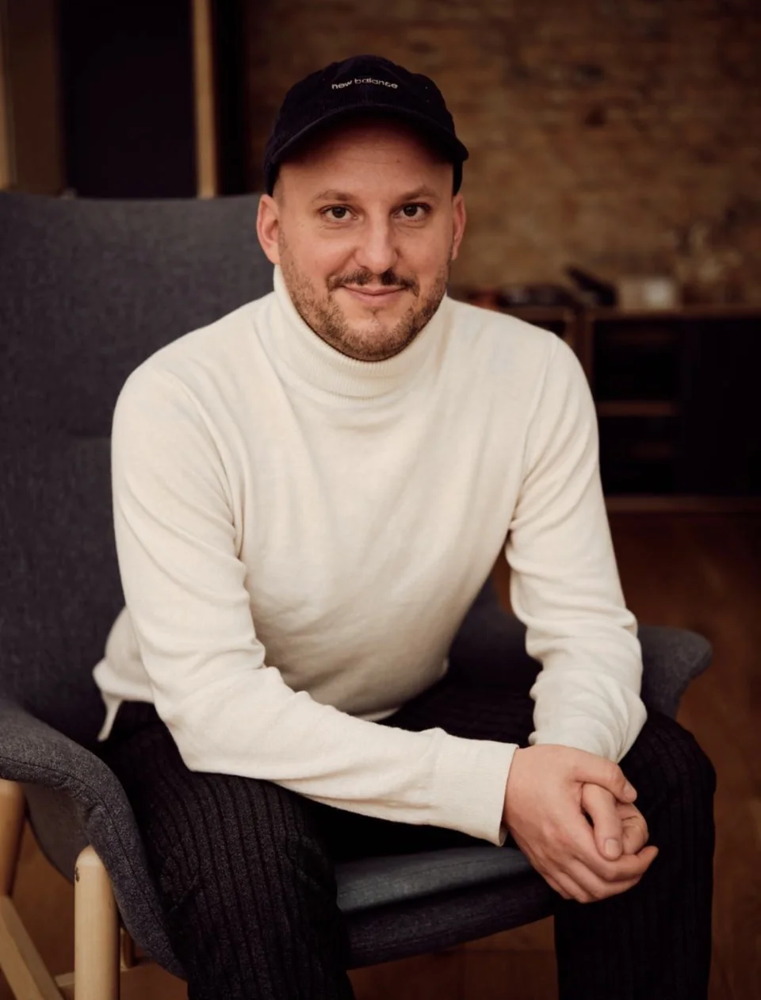

Menschen, die Deine Frage kennen.
Du weißt nach dem Treffen, wer an ähnlichen Entscheidungen arbeitet – und wen Du wieder ansprechen möchtest.
25 EXPERTS · Köln, Rheinauhafen
Nächstes Event: Change Management02.–03.12.202625 Menschen, die Verantwortung übernehmen und Veränderung voranbringen. Anderthalb Tage für die Entscheidungen von morgen – und die Verbindungen, die sie möglich machen.
Dein Event findenFür Gestalter bei Versicherern, Maklerpools und Versicherungsvertrieben. Dein Beitrag zählt. Nicht Dein Titel.
01 / Die Entscheidungen von morgen
Bring den Fall mit, bei dem die einfache Antwort nicht reicht. Vergleiche Deine Erfahrung mit Menschen aus anderen Häusern.
02 / Das nächste Event
02. & 03. Dezember 2026 · Köln
25 CHANGE MANAGEMENT EXPERTS
Neue Werkzeuge sind schnell eingeführt. Neue Zusammenarbeit braucht Entscheidungen. Wir vergleichen, wie Versicherungsunternehmen Verantwortung klären, Skepsis aufnehmen und Fortschritt erkennen.
03 / Die Menschen hinter dem Event
Du bringst Erfahrung aus Deinem Unternehmen mit. Wir bereiten die Fragen vor, verbinden unterschiedliche Standpunkte und halten fest, wo Ihr gemeinsam weiterkommt – und wo Eure Meinungen auseinandergehen.
Die Menschen hinter 25 EXPERTS kennenlernen ↗Externe Mitwirkende nennen wir auf der jeweiligen Editionsseite, sobald ihre Zusage vorliegt.
Verantwortet 25 EXPERTS und die Auswahl der Teilnehmenden. Bringt Fragen und Menschen aus der Versicherungsbranche zusammen.

Führt durch den Austausch. Fragt nach, wenn Positionen auseinandergehen, und achtet darauf, dass alle Perspektiven gehört werden.
04 / Anderthalb Tage in Köln
Dein Anliegen fließt in ein gemeinsames Dossier ein. So beginnen wir bei den Entscheidungen, die Dich beschäftigen.
Praxisfälle vergleichen, Annahmen hinterfragen, an Lösungen arbeiten. 25 Teilnehmer bedeuten: Deine Stimme hat Platz.
Beim Aperitif und gemeinsamen Dinner bleibt Zeit für die Frage, die Du einer Person genauer stellen möchtest.
Du formulierst, was Du in Deinem Unternehmen prüfen oder verändern möchtest. Die anderen helfen, es konkret zu machen.
SESSEL HUB · Kranhaus Nord
Im Zollhafen 12, 50678 Köln
Dinner im Gilden im Zims
Heumarkt 77, 50667 Köln
05 / Was bleibt
Du weißt nach dem Treffen, wer an ähnlichen Entscheidungen arbeitet – und wen Du wieder ansprechen möchtest.
Im Dissenspapier halten wir Erkenntnisse und begründete Unterschiede fest. Die KI-Gegenperspektive als „26. Experte“ hilft, eigene Annahmen zu prüfen. Das Urteil bleibt bei Dir.
Deine Einschätzung kommt ins Kuvert. Bei der nächsten Edition zum selben Thema kannst Du sie neu betrachten.
06 / Dein Event
Wähle Dein Thema. Entscheidend sind Dein Beitrag und Dein Gestaltungswille – auch ohne Führungstitel.
Das nächste Event
Wie wird aus neuen Werkzeugen eine Zusammenarbeit, die trägt?
2. und 3. Dezember 2026Termin bestätigt
Edition entdeckenWer entscheidet zwischen Schutz, Tempo und Verantwortung?
28./29. Januar 2027 (vorläufig)Termin vorläufig
Edition entdeckenWas braucht Vertrieb, wenn sich Erwartungen und Zugänge verändern?
18./19. März 2027 (vorläufig)Termin vorläufig
Edition entdeckenWie stärken Frauen ihren Einfluss auf die Entscheidungen der Branche?
14./15. April 2027 (vorläufig)Termin vorläufig
Edition entdeckenWie werden aus Übergaben gemeinsame Entscheidungen?
9./10. Juni 2027 (vorläufig)Termin vorläufig
Edition entdeckenWelche Daten tragen Entscheidungen – und wer steht dafür ein?
15./16. September 2027 (vorläufig)Termin vorläufig
Edition entdeckenWie wird aus Nachhaltigkeitszielen veränderte Praxis?
7./8. Oktober 2027 (vorläufig)Termin vorläufig
Edition entdecken07 / Dein Platz beim Event
Erzähl uns, welche Verantwortung Du trägst und welche Frage Dich beschäftigt. Wir wählen die Teilnehmenden so aus, dass unterschiedliche Erfahrungen zusammenkommen. Höchstens zwei Teilnehmer pro Unternehmen.
Jetzt anmeldenPersönliche Rückmeldung innerhalb von zwei Werktagen. Erst nach Zusage entscheidest Du über eine verbindliche Buchung.
450 €
netto pro Person
535,50 € inkl. 19 % USt.
Anreise und Übernachtung sind nicht enthalten.
Für Menschen, die bei Versicherern, Maklerpools und Versicherungsvertrieben Verantwortung übernehmen und Veränderung voranbringen. Fachliche Erfahrung und Dein Anliegen zählen, nicht Alter oder Titel. Die Female Edition richtet sich an Frauen in der Versicherungsbranche.
Du fragst Deine Teilnahme kostenfrei an. Wir melden uns innerhalb von zwei Werktagen persönlich. Nach Zusage entscheidest Du, ob Du verbindlich buchen möchtest. Erst diese Buchung begründet eine Zahlungspflicht.
Erfahrungen dürfen weitergedacht werden; Aussagen werden außerhalb des Events keiner Person oder Organisation zugeordnet. Öffentliche Ergebnisse werden nur nach Freigabe geteilt.
Unser KodexDer Status steht bei jeder Edition. Vorläufige Termine sind ausdrücklich gekennzeichnet. Den aktuellen Stand findest Du auf der jeweiligen Editionsseite.
Editionen und Termine